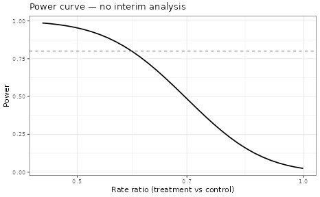
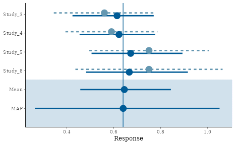
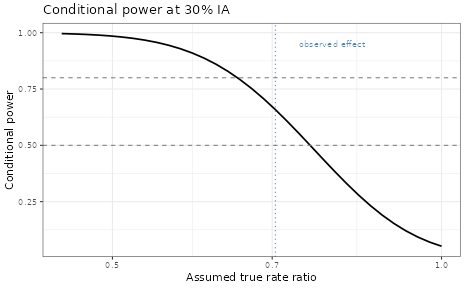

Interim Futility for Negative Binomial Endpoints
Sebastian Weber
2026-06-30
Source:vignettes/articles/negbin_interim_futility.Rmd
negbin_interim_futility.RmdIntroduction
Clinical trials with recurrent event endpoints — such as asthma exacerbations — typically require large sample sizes and long follow-up. These features make early interim analyses (IAs) for futility attractive: stopping a trial that is unlikely to succeed saves resources and avoids exposing patients to ineffective treatments.
However, a futility IA at a low information fraction (e.g. 30%) has limited statistical power. The data collected so far carry substantial uncertainty, making it difficult to distinguish a truly futile scenario from random noise. This is where historical borrowing via a Meta-Analytic-Predictive (MAP) prior can help: by incorporating external evidence on the control rate and overdispersion, the MAP prior effectively supplements the interim data, increasing the information fraction available at the IA and enabling more precise futility decisions.
This article develops the idea in four steps:
- Baseline: Operating characteristics (OC) of a fixed-sample design without an IA.
- Futility IA without borrowing: Introduce a futility stop at 30% information fraction using non-informative priors. Quantify the power loss under the alternative.
- Futility IA with MAP prior: Derive a MAP prior from four historical phase III trials. Show the effective sample size (ESS) and the information fraction gained.
- Interim decision-making: Conditional power and predictive power (probability of success) at a hypothesized interim state.
- Design-level power: Numerical integration over the full trial to quantify the expected power loss from the futility IA under the alternative.
Throughout, the final confirmatory analysis is purely frequentist — the MAP prior is used only for interim projections.
Negative binomial setup
We work on the log mean rate scale under the standard normal approximation to the MLE (see Appendix for the full parametrization). The treatment effect is the log-rate ratio .
## Assumed true parameters for design planning
lambda_ctrl <- 1.8 # placebo rate (events/patient-year)
kappa_true <- 1.9 # overdispersion (phi)
followup <- 1 # exposure per patient (years)
log_exposure <- log(followup)
## NB family object for OC calculations (fixed kappa)
nb_family <- negative.binomial(theta = 1 / kappa_true)
## Per-patient sampling SD on the log-rate scale
## sigma = sqrt((1 + kappa * lambda * t) / (lambda * t))
sigma_fn <- function(lambda, kappa, t) {
sqrt((1 + kappa * lambda * t) / (lambda * t))
}
sigma_ctrl <- round(sigma_fn(lambda_ctrl, kappa_true, followup), 2)
sigma_treat <- sigma_ctrl # same rate assumed under H0
cat(sprintf("Per-patient sigma (log-rate scale): %.3f\n", sigma_ctrl))## Per-patient sigma (log-rate scale): 1.570Fixed-sample design (no interim)
We first evaluate the operating characteristics of a conventional 2-arm trial without an interim analysis.
## Priors — non-informative for both arms (no borrowing)
uninf_ctrl <- mixnorm(c(1, log(lambda_ctrl), 10), sigma = sigma_ctrl)
uninf_treat <- mixnorm(c(1, log(lambda_ctrl), 10), sigma = sigma_treat)
## Sample sizes
n_treat <- 150
n_ctrl <- 150
## Decision: P(delta < 0 | data) > 0.975 (one-sided test)
success_crit <- decision2S(0.975, 0, lower.tail = TRUE)
## OC function
oc_fixed <- oc2S(uninf_treat, uninf_ctrl,
n1 = n_treat, n2 = n_ctrl,
decision = success_crit,
family = nb_family,
offset1 = log_exposure, offset2 = log_exposure
)
Power curve — fixed-sample design (no IA)
Futility IA at 30% information fraction (no borrowing)
We now add a futility stop at 30% of the planned information. With no historical borrowing, the IA relies entirely on the accrued trial data. This would be a very early stop with rather imprecise estimates compared to a more common IA look at 50%.
The information fraction is defined as the ratio of the Fisher information for the treatment effect (log rate ratio) at the interim relative to the final analysis. Under a negative binomial model with log link, the per-patient Fisher information for in arm is , and the information for the treatment effect from and patients is We compute the interim sample sizes required for 30% of at the planned final sample size, evaluated under the design alternative :
| Quantity | Value |
|---|---|
| Design alternative log(RR) | -0.50 |
| Per-patient Fisher info (treatment) | 0.3551 |
| Per-patient Fisher info (control) | 0.4072 |
| Information at final (n/arm) | 28.45 (n = 150) |
| Information target at IA (30%) | 8.54 |
| Patients at IA (treatment / control) | 45 / 45 |
| Patients remaining (treatment / control) | 105 / 105 |
The futility rule is based on predictive power (probability of success): given the interim posterior, what is the probability that the final analysis — using all planned patients — will declare success?
If the PoS falls below a futility threshold (e.g. 10%), we stop:
## Futility threshold for PoS
post_futility_thresh <- 0.10Operating characteristics of the IA design
To evaluate the operating characteristics of the design with
the futility IA, we use numerical integration via
oc2S_interim(). This function avoids noisy Monte Carlo
estimation via Gauss-Hermite quadrature over the distribution of
possible interim outcomes (see Appendix:
Integration approach for details).
The interim decision rule continues the trial whenever the probability of success exceeds the futility threshold:
## IA continuation rule: continue if PoS > threshold
## Note: we use the fixed-sigma path of pos2S (no family argument)
## for performance. This is valid because sigma is approximately
## constant over the posterior range at the interim.
ia_rule_uninf <- function(post1_ia, post2_ia) {
pos2S(post1_ia, post2_ia,
n1 = n_treat - n_treat_ia, n2 = n_ctrl - n_ctrl_ia,
decision = success_crit,
sigma1 = sigma_ctrl, sigma2 = sigma_ctrl)(post1_ia, post2_ia) > post_futility_thresh
}
## OC function with futility IA (no borrowing)
oc_ia_uninf <- oc2S_interim(
prior1 = uninf_treat, prior2 = uninf_ctrl,
n1 = n_treat, n2 = n_ctrl,
n1_ia = n_treat_ia, n2_ia = n_ctrl_ia,
decision = success_crit,
ia_rule = ia_rule_uninf,
family = nb_family,
offset1 = log_exposure, offset2 = log_exposure,
Ngrid_ia = 11L
)
## Evaluate at null and design alternative (pos2S rule is expensive)
log_rr_grid <- c(`No benefit` = 0, `Design alt` = -0.6)
power_ia_uninf_df <- oc_ia_uninf(
theta1 = log_mu_ctrl + log_rr_grid,
theta2 = rep(log_mu_ctrl, length(log_rr_grid))
)
power_ia_uninf_df$log_rr <- log_rr_grid
## Compare with fixed-design power at same grid points
power_fixed_grid <- oc_fixed(log_mu_ctrl + log_rr_grid,
rep(log_mu_ctrl, length(log_rr_grid)))| Scenario | Rate ratio | Fixed design | IA (no borrow) | Power loss | Futility stop |
|---|---|---|---|---|---|
| No benefit | 1.00 | 0.025 | 0.022 | 0.003 | 0.631 |
| Design alt | 0.55 | 0.889 | 0.865 | 0.024 | 0.046 |
At 30% information fraction with non-informative priors, the futility IA causes a noticeable power loss under the alternative while the futility stopping probability under the null is moderate. The interim data simply do not carry enough information for reliable futility decisions.
MAP prior from historical phase III trials
Historical data
We use placebo-arm data from the phase III asthma trials in the
asthma data set (Table 1 of Holzhauer, Wang & Schmidli,
2018):
asthma_ph3 <- subset(asthma, phase == "phase III")| study | d | n | log_mu_hat | se_log_mu_hat | kappa_hat | |
|---|---|---|---|---|---|---|
| 3 | Study_3 | 0.62 | 191 | 0.56 | 0.11 | 1.43 |
| 4 | Study_4 | 1.00 | 244 | 0.59 | 0.10 | 1.97 |
| 5 | Study_5 | 1.00 | 232 | 0.75 | 0.13 | 3.38 |
| 8 | Study_8 | 0.46 | 66 | 0.75 | 0.16 | 0.67 |
MAP prior for the control log-rate
The historical trials have different exposure (follow-up) durations
.
Since the model is on the log-rate scale, we include
as an offset in gMAP so that the estimated
parameter is the log-rate
rather than the log-mean count
:
map_mcmc <- gMAP(
cbind(log_mu_hat, se_log_mu_hat) ~ 1 | study,
offset = log(d),
data = asthma_ph3,
family = gaussian,
tau.dist = "HalfNormal",
tau.prior = sigma_ctrl / 4,
beta.prior = 2
)## Assuming default prior location for beta: 0
print(map_mcmc)## Generalized Meta Analytic Predictive Prior Analysis
##
## Call: gMAP(formula = cbind(log_mu_hat, se_log_mu_hat) ~ 1 | study,
## family = gaussian, data = asthma_ph3, offset = log(d), tau.dist = "HalfNormal",
## tau.prior = sigma_ctrl/4, beta.prior = 2)
##
## Exchangeability tau strata: 1
## Prediction tau stratum : 1
## Maximal Rhat : 1
##
## Between-trial heterogeneity of tau prediction stratum
## mean median sd q2.5 q50 q97.5
## tau[1] 0.116 0.0858 0.107 0.00442 0.0858 0.398
##
## MAP Prior MCMC sample
## mean median sd q2.5 q50 q97.5
## theta_resp_pred 0.643 0.64 0.188 0.264 0.64 1.05
map_rate <- automixfit(map_mcmc)
sigma(map_rate) <- sigma_ctrl
Forest plot of MAP model for control log-rate
Effective sample size and information fraction gain
The ESS tells us how many patients the MAP prior is worth. It adds precision to the control arm only, so we fold it into the treatment-effect information defined above as extra control patients. The information fraction at the IA then uses the same ratio, now with :
ess_map <- round(ess(map_rate, sigma = sigma_ctrl))
## Effect information I(delta) at IA without borrowing
info_ia_no_borrow <- 1 / (1 / (n_treat_ia * Ip_treat) +
1 / (n_ctrl_ia * Ip_ctrl))
info_frac_no_borrow <- info_ia_no_borrow / info_final
## Effect information I(delta) at IA with MAP prior:
## ESS adds patient-equivalents to the CONTROL arm only.
info_ia_with_map <- 1 / (1 / (n_treat_ia * Ip_treat) +
1 / ((n_ctrl_ia + ess_map) * Ip_ctrl))
info_frac_with_map <- info_ia_with_map / info_final| Quantity | Value |
|---|---|
| MAP prior ESS | 171 patients |
| Info fraction at IA (no borrowing) | 30.0% |
| Info fraction at IA (with MAP prior) | 47.5% |
| Info fraction gained | +17.5 pp |
The MAP prior substantially increases the effective information fraction at the IA, making futility decisions more reliable.
Power with futility IA and MAP prior
## IA continuation rule with MAP prior on control for prediction.
## pos2S boundary uses the uninformative posteriors (final analysis
## is uninformative), but we integrate out future uncertainty using
## the MAP-informed posterior for control (post2_ia_info).
ia_rule_map <- function(post1_ia, post2_ia, post1_ia_info, post2_ia_info) {
pos2S(post1_ia, post2_ia,
n1 = n_treat - n_treat_ia, n2 = n_ctrl - n_ctrl_ia,
decision = success_crit,
sigma1 = sigma_ctrl, sigma2 = sigma_ctrl)(post1_ia, post2_ia_info) > post_futility_thresh
}
## OC function with futility IA and MAP prior
## prior1/prior2 are uninformative (used for the final analysis boundary).
## prior2_ia is the MAP prior (used only for the IA decision).
oc_ia_map <- oc2S_interim(
prior1 = uninf_treat, prior2 = uninf_ctrl,
n1 = n_treat, n2 = n_ctrl,
n1_ia = n_treat_ia, n2_ia = n_ctrl_ia,
decision = success_crit,
ia_rule = ia_rule_map,
prior2_ia = map_rate,
family = nb_family,
offset1 = log_exposure, offset2 = log_exposure,
Ngrid_ia = 11L
)
## Evaluate at two scenarios: no benefit (rate ratio = 1) and the
## design alternative. The pos2S-based rule is expensive, so we keep
## the grid small.
scenarios <- c(`No benefit` = 0, `Design alt` = log_rr_design_alt <- -0.6)
theta1_eval <- log_mu_ctrl + scenarios
theta2_eval <- rep(log_mu_ctrl, length(scenarios))
map_grid <- oc_ia_map(theta1 = theta1_eval, theta2 = theta2_eval)
uninf_grid <- oc_ia_uninf(theta1 = theta1_eval, theta2 = theta2_eval)
fixed_power <- oc_fixed(theta1_eval, theta2_eval)| Scenario | Rate ratio | Power (no IA) | Power (no borrow) | Power (MAP) | Stop (no borrow) | Stop (MAP) |
|---|---|---|---|---|---|---|
| No benefit | 1.00 | 0.025 | 0.022 | 0.022 | 0.631 | 0.584 |
| Design alt | 0.55 | 0.889 | 0.865 | 0.883 | 0.046 | 0.013 |
The table covers two complementary scenarios. A noticable result appears under the design alternative: the MAP prior almost eliminates the power loss caused by the futility IA. Without borrowing, inserting the IA costs about 2.4 percentage points of power (88.9% → 86.5%); with the MAP prior the loss shrinks to roughly 0.6 percentage points (88.9% → 88.3%), recovering about three quarters of the lost power and landing essentially back at the fixed-design value. This is remarkable: borrowing historical control information at the interim makes the futility rule almost “free” under the alternative, because the better-informed interim posterior leads to far fewer erroneous futility stops (stop probability 4.6% → 1.3%). Under no treatment benefit (rate ratio = 1), the relevant quantity is instead the futility-stop probability: a useful IA should stop early with high probability when there is nothing to gain. Both designs stop with high probability here, so the IA is doing its job, while power under the design alternative is preserved.
It is worth noting the trade-off behind these numbers. Borrowing historical control information raises the interim information fraction (30% → ~44%), which makes the control estimate more precise and the futility decision less reactive to noise. Under the null the MAP stop probability is actually lower (57% vs 63%): without borrowing, the noisy 30%-information control estimate pushes more interim outcomes across the futility threshold — some for the wrong reason. With the MAP prior the predictive probability of success clusters nearer its true value, so fewer outcomes are stopped by chance. The same noise reduction is what protects power under the alternative. Borrowing therefore buys sharper, less reactive decisions — not simply more stopping.
The intro section deliberately powers the IA-rule grid at just these
two anchor scenarios for speed; evaluating oc_ia_map /
oc_ia_uninf over a finer log_rr grid traces
the full power and stop-probability curves at higher computational
cost.
Conditional and predictive power at interim
At an actual IA, two complementary quantities inform the go/no-go decision:
- Conditional power (CP): The probability of final success given a specific assumed true treatment effect. This is a frequentist concept — the unknown parameters are fixed.
- Predictive power / Probability of Success (PoS): The probability of final success integrating over parameter uncertainty. This is a Bayesian concept — the unknown parameters are drawn from the interim posterior.
Hypothesized interim state
We consider a scenario where at the IA (30% information fraction), the observed data suggest a moderate treatment effect:
## Observed interim summary statistics
ia_log_mu_ctrl <- 0.70 # placebo MLE on log-rate scale
ia_se_mu_ctrl <- sigma_fn(exp(0.70), kappa_true, followup) / sqrt(n_ctrl_ia)
ia_log_mu_treat <- 0.35 # treatment MLE (log RR ≈ -0.35)
ia_se_mu_treat <- sigma_fn(exp(0.35), kappa_true, followup) / sqrt(n_treat_ia)| Quantity | Value | SE |
|---|---|---|
| Interim log-rate control | 0.70 | 0.231 |
| Interim log-rate treatment | 0.35 | 0.241 |
| Observed log RR | -0.35 |
Conditional power
Conditional power evaluates the probability of final success
assuming the true treatment effect equals a specific value. We
construct this using oc2S with the interim posteriors as
“priors” for the remaining data:
## OC function conditioned on interim posteriors
cp_fn <- oc2S(post_treat_ia, post_ctrl_ia,
n1 = n_treat - n_treat_ia,
n2 = n_ctrl - n_ctrl_ia,
decision = success_crit,
family = nb_family,
offset1 = log_exposure, offset2 = log_exposure
)
## Evaluate across true log-rate ratios
log_rr_cp <- seq(0, -0.8, by = -0.025)
cp_values <- cp_fn(log_mu_ctrl + log_rr_cp,
rep(log_mu_ctrl, length(log_rr_cp)))
ggplot(data.frame(log_rr = log_rr_cp, cp = cp_values),
aes(exp(log_rr), cp)) +
geom_line(linewidth = 0.8) +
geom_hline(yintercept = c(0.5, 0.8),
linetype = "dashed", colour = "grey50") +
geom_vline(xintercept = exp(ia_log_mu_treat - ia_log_mu_ctrl),
linetype = "dotted", colour = "steelblue") +
annotate("text",
x = exp(ia_log_mu_treat - ia_log_mu_ctrl) * 1.05,
y = 0.95, label = "observed effect",
hjust = 0, size = 3, colour = "steelblue") +
labs(x = "Assumed true rate ratio",
y = "Conditional power",
title = "Conditional power at 30% IA") +
scale_x_log10()
Conditional power at interim
Predictive power (Probability of Success)
Predictive power integrates over the interim posterior distribution of the treatment effect, providing a single summary that accounts for parameter uncertainty:
## PoS for remaining patients given interim posteriors
pos_fn <- pos2S(post_treat_ia, post_ctrl_ia,
n1 = n_treat - n_treat_ia,
n2 = n_ctrl - n_ctrl_ia,
decision = success_crit,
family = nb_family,
offset1 = log_exposure, offset2 = log_exposure
)
## Compute predictive power and conditional power at observed effect in one pass
pos_value <- pos_fn(post_treat_ia, post_ctrl_ia)
cp_at_obs <- cp_fn(ia_log_mu_treat, ia_log_mu_ctrl)| Metric | Value |
|---|---|
| Conditional power at observed effect | 0.537 |
| Predictive power (PoS) | 0.487 |
The predictive power is typically lower than the conditional power evaluated at the observed effect, because it accounts for the possibility that the true effect is smaller (or absent).
Design-level power with futility IA
The individual-scenario analysis above is useful at the IA itself. At the design stage, we want to know the overall impact of the futility IA on power — averaging over all possible interim outcomes under an assumed truth.
For Normal-endpoint group-sequential Bayesian designs, the gsbDesign
package (Gerber & Gsponer, 2016) provides a full analytic treatment
of such operating characteristics via conjugate posterior updates. The
oc2S_interim() helper used here follows the same numerical
integration idea but works with the mixture-prior machinery in RBesT
(see Appendix: Integration
approach). We already computed these above. The table at the design
alternative (rate ratio ≈ 0.55) confirms that the MAP prior reduces the
power loss from the futility IA while increasing the futility stopping
probability under the null — exactly the desired behavior.
Discussion
This article demonstrated a simple progression for using historical borrowing in the design of a futility interim analysis:
- Establish the baseline without an IA.
- Quantify the cost of adding a futility IA with limited data.
- Show the benefit of a MAP prior, both in ESS/information fraction terms and in operating characteristics.
- Provide interim decision tools via conditional and predictive power.
- Confirm at the design level that the power loss is acceptable via numerical integration.
Key insights:
- A futility IA at low information fractions (e.g. 30%) is unreliable without supplementary information. The uncertainty in the interim estimate is too large.
- The MAP prior adds effective sample size to the control arm, boosting the information fraction at the IA and enabling sharper futility decisions.
- The final confirmatory analysis remains frequentist — no prior is imported. The MAP prior serves only as a calibration tool for interim projections.
- Predictive power (PoS) is the more conservative and realistic interim metric compared to conditional power, because it integrates over parameter uncertainty.
It is left as an outlook to make use of the historical information of
the overdisperion parameter, which can be synthesized in a normal-normal
hierarchical model and also used as a MAP prior at the IA. However, a
random overdispersion parameter is not supported with RBesT
directly (assuming a known overdispersion is a common assumption at the
design stage).
Limitations
- Overdispersion is treated as fixed. A more thorough analysis would derive a MAP prior for and integrate over its posterior uncertainty (cf. Holzhauer et al., 2018; see the companion article on SSR).
- The normal approximation on the log-rate scale assumes moderate to large event counts. For rare-event settings, exact likelihoods may be needed.
References
[1] Neuenschwander B. et al., Clin Trials. 2010;
7(1):5-18
[2] Holzhauer B., Wang C., Schmidli H. Evidence synthesis from aggregate
recurrent event data for clinical trial design and analysis.
Statistics in Medicine. 2018;37:867-882.
[3] Schmidli H. et al., Biometrics 2014;70(4):1023-1032
[4] Gerber F, Gsponer T (2016). “gsbDesign: An R Package for Evaluating
the Operating Characteristics of a Group Sequential Bayesian Design.”
Journal of Statistical Software, 69(11), 1–23.
doi: 10.18637/jss.v069.i11.
[5] Gsponer T, Gerber F, Bornkamp B, Ohlssen D, Vandemeulebroecke M,
Schmidli H (2014). “A Practical Guide to Bayesian Group Sequential
Designs.” Pharmaceutical Statistics, 13(1),
71–80. doi: 10.1002/pst.1593.
R Session Info
## R version 4.6.1 (2026-06-24)
## Platform: x86_64-pc-linux-gnu
## Running under: Ubuntu 24.04.4 LTS
##
## Matrix products: default
## BLAS: /usr/lib/x86_64-linux-gnu/openblas-pthread/libblas.so.3
## LAPACK: /usr/lib/x86_64-linux-gnu/openblas-pthread/libopenblasp-r0.3.26.so; LAPACK version 3.12.0
##
## locale:
## [1] LC_CTYPE=C.UTF-8 LC_NUMERIC=C LC_TIME=C.UTF-8
## [4] LC_COLLATE=C.UTF-8 LC_MONETARY=C.UTF-8 LC_MESSAGES=C.UTF-8
## [7] LC_PAPER=C.UTF-8 LC_NAME=C LC_ADDRESS=C
## [10] LC_TELEPHONE=C LC_MEASUREMENT=C.UTF-8 LC_IDENTIFICATION=C
##
## time zone: UTC
## tzcode source: system (glibc)
##
## attached base packages:
## [1] stats graphics grDevices utils datasets methods base
##
## other attached packages:
## [1] MASS_7.3-65 dplyr_1.2.1 ggplot2_4.0.3 knitr_1.51 RBesT_1.10-0
##
## loaded via a namespace (and not attached):
## [1] gtable_0.3.6 tensorA_0.36.2.1 xfun_0.59
## [4] bslib_0.11.0 QuickJSR_1.10.0 htmlwidgets_1.6.4
## [7] inline_0.3.21 vctrs_0.7.3 tools_4.6.1
## [10] generics_0.1.4 stats4_4.6.1 parallel_4.6.1
## [13] tibble_3.3.1 pkgconfig_2.0.3 checkmate_2.3.4
## [16] RColorBrewer_1.1-3 S7_0.2.2 desc_1.4.3
## [19] distributional_0.8.1 RcppParallel_5.1.11-2 assertthat_0.2.1
## [22] lifecycle_1.0.5 compiler_4.6.1 farver_2.1.2
## [25] stringr_1.6.0 textshaping_1.0.5 statmod_1.5.2
## [28] codetools_0.2-20 htmltools_0.5.9 sass_0.4.10
## [31] bayesplot_1.15.0 yaml_2.3.12 Formula_1.2-5
## [34] pillar_1.11.1 pkgdown_2.2.0 jquerylib_0.1.4
## [37] cachem_1.1.0 StanHeaders_2.32.10 abind_1.4-8
## [40] posterior_1.7.0 rstan_2.32.7 tidyselect_1.2.1
## [43] digest_0.6.39 stringi_1.8.7 mvtnorm_1.4-1
## [46] reshape2_1.4.5 labeling_0.4.3 fastmap_1.2.0
## [49] grid_4.6.1 cli_3.6.6 magrittr_2.0.5
## [52] loo_2.10.0 pkgbuild_1.4.8 withr_3.0.3
## [55] scales_1.4.0 backports_1.5.1 rmarkdown_2.31
## [58] matrixStats_1.5.0 otel_0.2.0 gridExtra_2.3.1
## [61] ragg_1.5.2 evaluate_1.0.5 rstantools_2.6.0
## [64] rlang_1.2.0 Rcpp_1.1.1-1.1 glue_1.8.1
## [67] jsonlite_2.0.0 plyr_1.8.9 R6_2.6.1
## [70] systemfonts_1.3.2 fs_2.1.0Appendix: Integration approach for interim OC
Computing the operating characteristics of a design with an interim
analysis requires averaging over all possible interim outcomes. The
oc2S_interim() function (available via
system.file("extra", "oc2S_interim.R", package = "RBesT"))
does this via deterministic numerical integration
rather than Monte Carlo simulation, yielding smooth, noise-free OC
curves.
Decomposition
The unconditional power is
where are the interim summary statistics (MLEs on the log-rate scale) and are the true parameters.
The outer expectation is a 2D integral over the joint distribution of the interim summaries . Since the two arms are independent, this factors into a product of two 1D Normal integrals — handled by Gauss-Hermite quadrature.
Full-trial boundary reuse
The key performance insight is that the full-trial decision boundary can be computed once and reused at every quadrature point.
The final analysis decides based on the full-sample means , which are a deterministic function of the interim and remaining data:
Conditional on the interim data and the true parameter , the full-sample mean is Normal:
The decision boundary
— computed by decision2S_boundary() using the original
priors and full sample sizes — applies unchanged, because the sequential
Bayesian update property guarantees
At each quadrature point, the conditional OC reduces to
which is again evaluated by Gauss-Hermite quadrature (an inner 1D integral).
Appendix: Negative binomial parametrization
Distribution
For patient in arm with follow-up (exposure) time and mean event rate (events per unit time), the count follows
with probability mass function
and moments
Here is the overdispersion parameter. For the distribution reduces to Poisson. The treatment effect is parametrized as the rate ratio , or equivalently the log-rate ratio .
Parametrization conventions
Several conventions coexist in the literature:
| Convention | Overdispersion | Relation |
|---|---|---|
| (this article, Holzhauer et al.) | — | |
| (Mütze et al., rpact) | ||
theta in MASS::negative.binomial()
|
theta
|
theta
|
size in dnbinom()
|
size
|
size
|
Caution: R’s
MASS::negative.binomial(theta) uses theta as
the reciprocal of the overdispersion
(),
so larger values of theta mean less
overdispersion.
Fisher information on the log-rate scale
The analysis is conducted on the log mean rate scale, . The MLE is approximately normally distributed with variance (Fisher information inverse)
for patients each with exposure . The approximate Fisher information for arm is therefore
Key observations:
- Precision is event-driven: The numerator represents the expected total number of events. More events yield more information.
- Overdispersion is a tax: The denominator inflates the variance. Higher reduces the information per patient.
- Exposure matters: Longer follow-up increases the expected events and thus the information, but with diminishing returns when .
The variance of the log-rate ratio estimator is
Connecting to MASS::negative.binomial()
In RBesT’s design functions (oc1S, oc2S,
pos1S, pos2S), the family
argument accepts an object created by
MASS::negative.binomial(). This object encodes the
variance–mean relationship
,
which on the log-link scale translates exactly to the Fisher information
formula above.
## Create NB family with kappa = 1.9 (theta = 1/1.9)
kappa <- 1.9
nb <- MASS::negative.binomial(theta = 1 / kappa)
## The variance function: V(mu) = mu + mu^2 / theta = mu * (1 + kappa * mu)
mu_grid <- seq(0.5, 3, by = 0.5)
data.frame(
mu = mu_grid,
V_mu = nb$variance(mu_grid),
check = mu_grid * (1 + kappa * mu_grid)
)## mu V_mu check
## 1 0.5 0.975 0.975
## 2 1.0 2.900 2.900
## 3 1.5 5.775 5.775
## 4 2.0 9.600 9.600
## 5 2.5 14.375 14.375
## 6 3.0 20.100 20.100